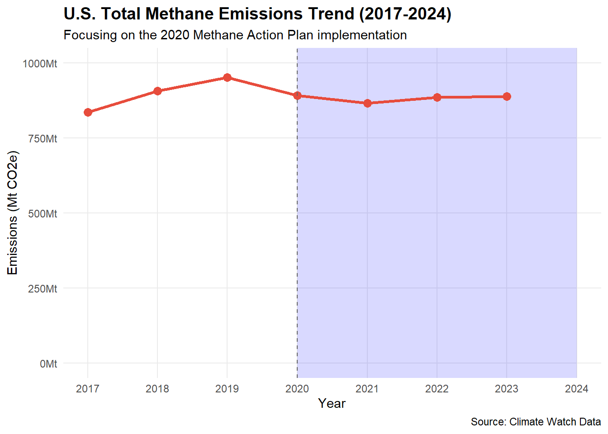
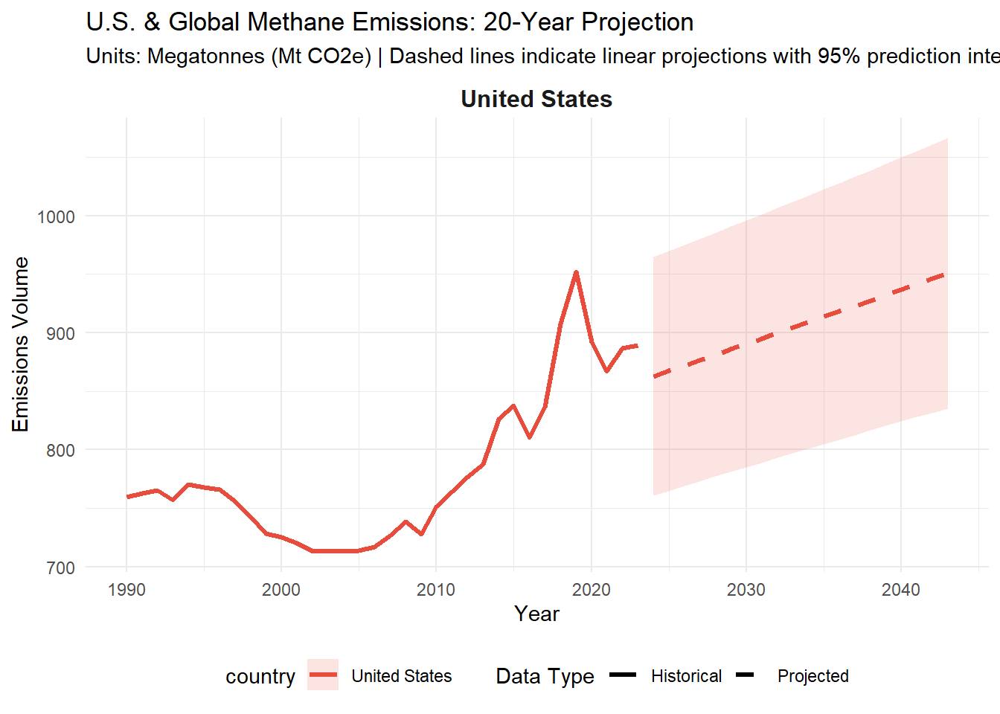

# A tibble: 6 × 4
Year livestock_kt global_kt livestock_share
<int> <dbl> <dbl> <dbl>
1 1990 85607. 2364520 3.62
2 1991 85995. 2369900 3.63
3 1992 87339. 2377210 3.67
4 1993 88448. 2347450 3.77
5 1994 90021. 2394330 3.76
6 1995 91463. 2394220 3.82Methane Emissions - Individual Report
Introduction
This project has been a true roller coaster, from defining the overall topic and data sources to shaping our specific analytical questions.
Defining the scale of each individual question was a challenge. While my teammates and I were busy acquiring data and building visualizations, we occasionally found ourselves crossing over into each other’s territory or inadvertently analyzing another teammate’s scope.
My specific question was: How has livestock’s share of U.S. methane emissions changed over time? To address this, I used Climate Watch as my primary resource. To analyze the historical trajectory of U.S. methane CH4 emissions by sector, we designed an automated data collection workflow to gather official statistics from Climate Watch and FAOSTAT.
First, our code sets up a secure folder on our computer to act as a data storage hub. Instead of reaching out to the internet to download the file fresh every single time we run our analysis—which would slow us down and place unnecessary stress on the database servers—the script downloads the data once and saves it locally.
Next, the code connects to the official Climate Watch web database and downloads the specific reference IDs for greenhouse gases and economic sectors. Here we needed all methane emissions CH4 in the United States from 1990 through 2024, broken down by every available sector, Grouping the data into clean 5-YEARS period, so we can more easily spot long-term historical shifts without getting distracted by minor year-to-year fluctuations.
Finally, the script checks for our locally saved FAOSTAT livestock dataset, verifies that the file is safe and complete, and loads it into our workspace so we can blend the two sources together.
Data Acquisition
In this chunk I took the raw data, isolated the relevant sectors, rearranged the data structure, and calculated the exact historical percentage that agricultural emissions contribute to the United States’ total methane footprint.
[1] "First few rows of calculated shares:"# A tibble: 6 × 4
year Agri_CH4 Total_CH4 livestock_share_pct
<int> <dbl> <dbl> <dbl>
1 1990 221. 760. 29.0
2 1991 221. 763. 29.0
3 1992 224. 765. 29.3
4 1993 225. 757. 29.7
5 1994 230. 770. 29.9
6 1995 231. 768. 30.11. Total Methane Emissions
Beginning with the examination of the total volume of methane CH4 emissions produced by the United States, this section establishes a historical baseline spanning 1990 to 2024, positioning domestic trends within the global climate landscape.
The following visualization illustrates total domestic methane emissions across all reporting sectors: Agriculture, Energy, Industrial Processes, Waste, and Land Use, Land-Use Change, and Forestry (LULUCF). Historically, this collective footprint peaked at more than 875 Mt CO2e
# A tibble: 6 × 5
year country Agri_CH4 Total_CH4 livestock_share_pct
<int> <chr> <dbl> <dbl> <dbl>
1 1990 United States 221. 760. 29.0
2 1991 United States 221. 763. 29.0
3 1992 United States 224. 765. 29.3
4 1993 United States 225. 757. 29.7
5 1994 United States 230. 770. 29.9
6 1995 United States 231. 768. 30.1── Attaching core tidyverse packages ──────────────────────── tidyverse 2.0.0 ──
✔ forcats 1.0.1 ✔ purrr 1.2.1
✔ lubridate 1.9.5 ✔ tibble 3.3.1
── Conflicts ────────────────────────────────────────── tidyverse_conflicts() ──
✖ scales::col_factor() masks readr::col_factor()
✖ purrr::discard() masks scales::discard()
✖ dplyr::filter() masks stats::filter()
✖ purrr::flatten() masks jsonlite::flatten()
✖ dplyr::lag() masks stats::lag()
ℹ Use the conflicted package (<http://conflicted.r-lib.org/>) to force all conflicts to become errorsWarning: Using `size` aesthetic for lines was deprecated in ggplot2 3.4.0.
ℹ Please use `linewidth` instead.
2. Historical Context: Global Contribution
Our analysis indicates that Agriculture and Energy are the two dominant sectors responsible for the vast majority of domestic methane emissions. Together, these two sectors account for roughly 70% of all anthropogenic methane in the United States. To clearly visualize their impact over time, the data was filtered to isolate these two categories and evaluate their long-term trajectories side by side.
To isolate and evaluate the structural dynamics of the two primary contributors, a data transformation and visualization pipeline was constructed using the tidyverse and ggplot2 frameworks.
As shown in this graphic, a clear divergence has emerged between the two sectors over the last decade.The energy sector’s share (plotted in blue) displays an upward trend, a shift heavily influenced by technological expansion and increasing industrial automation. In contrast, the agricultural sector’s relative contribution (plotted in red) has steadily declined, reflecting the initial impacts of targeted domestic and international climate frameworks adopted by the United States. To provide deeper context, the following timeline highlights the most relevant historical events that have affected U.S. methane emissions over the years.

Timeline
1990s: The Dawn of Precision & GMOs - 1990: Food, Agriculture, Conservation, and Trade Act (1990 Farm Bill): Established the first federal standards for organic food and increased focus on soil conservation.
1993: EPA Natural Gas STAR Program: The U.S. EPA launched a voluntary partnership with oil and gas companies to encourage the adoption of cost-effective leak detection technologies.
1996: Landfill Methane Rules: The U.S. implemented the first major federal regulations requiring large landfills to capture and flare methane, leading to significant long-term reductions in the waste sector.
1996: The GMO Revolution: The first large-scale commercial planting of genetically modified crops began. This shifted the industry toward monoculture and large-scale industrial spraying.
2000s: Consolidation & Biofuels - 2002: Farm Security and Rural Investment Act: Significantly increased subsidies for large-scale commodity crops (corn, soy), further encouraging the “industrial” model of farming.
2005: Energy Policy Act: Created the Renewable Fuel Standard (RFS), mandating that billions of gallons of corn-based ethanol be blended into U.S. gasoline. This caused a massive expansion of industrial corn acreage.
2008: Peak Industrial Concentration: This decade saw massive consolidation, with a few firms controlling the majority of the global seed and chemical markets.
2010s: The Methane & Tech Boom - 2012: The Shale Revolution Peak: The massive expansion of hydraulic fracturing (fracking) in the U.S. led to a surge in natural gas production. While gas replaced coal (lowering CO2), it caused a spike in methane leakage from infrastructure.
2015: EPA Methane Reporting: The EPA began stricter Subpart W reporting, requiring large-scale facilities to report greenhouse gas emissions, though agriculture remained largely exempt from the toughest limits, because in 2014, Satellite observations reveal that methane leaks from oils and gas were most higher than industry reports had suggested. In 2016, this EPA initiative pushed companies to make specific, transparent commitments to reduce leaks across their entire operations.
2018: Precision Ag Connectivity Act: Focused on bringing high-speed internet to rural areas to support the “Internet of Things” (sensors on cows, soil, and tractors) to manage methane and waste in real-time.
2020–2024: Climate Mandates & The “Super Pollutant” Push - 2020: The Pandemic Shift: Supply chain disruptions led to a temporary drop in industrial output, but highlighted the vulnerability of centralized “factory farm” models.
2021: U.S. Methane Emissions Action Plan: The Biden-Harris administration launched a comprehensive plan to slash methane emissions. For agriculture, this focused on “Climate-Smart” practices and voluntary incentives for manure digesters.
2021: The Global Methane Pledge (GMP): Launched at COP26 by the U.S. and EU, over 150 countries have now joined, committing to a collective 30% reduction in methane emissions by 2030.
2022: U.S. Inflation Reduction Act (IRA): This landmark law introduced the first-ever federal “Methane Waste Emissions Charge,” effectively taxing oil and gas companies for excessive methane leaks. It also provided nearly $20 billion for “Climate-Smart Agriculture,” the largest investment in conservation since the Dust Bowl. Much of this is aimed at reducing methane from livestock.
2024: National Strategy for Reducing Food Loss and Waste: A first-of-its-kind strategy to cut food waste in half, which directly targets methane leaking from landfills.
2024: EPA Final Methane Rule & Super Emitter Program: The EPA finalized strict new standards requiring the phase-out of routine flaring and the use of satellite/third-party data to identify “super-emitting” leaks in real-time.
3. U.S Total Methane Emissions Trend (2017-2024)
To better understand how recent climate policies have impacted our atmosphere, this section zooms in on the final years of our dataset; doing this by isolating methane observations for the United States “iso_code3==”USA” under the full baseline sector “Total including LULUCF” subsetting the window strictly to the years 2017 through 2024.
While maintaining the core data categories from the previous chart, this graphic highlights the year 2020. This period represents a global turning point when the United States and the international community began implementing stricter initiatives to fight greenhouse gas emissions, introducing intensified federal monitoring and laying the groundwork for the U.S. Methane Emissions Action Plan. To highlight this year, a vertical dash line was added with a geom_vline that intersects the x-axis at the exact launch point of the policy window (2020) to ground the visual narrative.
The structural trajectory of these initiatives—beginning with the Paris Agreement framework in 2015 and accelerating through the U.S. Methane Emissions Action Plan in 2020 (alongside subsequent 2021 regulatory updates)—established a formal baseline for mitigating “super-pollutants.” Post-2020, the data reveals stabilization and a gradual downward trend across specific sub-sectors.Thanks to targeted efforts—such as sealing abandoned oil and gas wells and introducing climate-smart farming techniques—total methane emissions have finally begun to drop even as industrial activity continues.

4. Methane Emissions prediction
To explore where current greenhouse gas trends might lead us over the next two decades, an statistical forecasting model was created, using standard linear regression y = beta0 + beta1 x + E and the tidyverse framework, to project methane emissions up to the year 2045.
The code implements this by analyzing the past behavior of both United States and global emissions. Using this statistical technique, the program calculates the historical “speed and direction” of CH4 emissions with 95% prediction interval.The combined timeline is mapped via ggplot2 and separated using facet_wrap (country, scales = “free_y”) to handle the varying volumetric baselines between domestic and global outputs. Uncertainty boundaries of where emissions are reasonably likely to land if historical conditions continue, are rendered using a transparent geom_ribbon() restricted strictly to the projected segment.
Our forecasting models show that even with current environmental initiatives in place, the United States faces three potential futures: 1- Business-As-Usual Baseline: If we continue on our current path without shifting strategies, the long-term emissions trajectory will continue their upward trend over the 20-year horizon.
2- Upper-Bound Risk Scenario: The upper limit of the prediction interval simulates a pathway where existing emission mitigation strategies are not completely followed or un-enforced. Under these conditions, domestic methane volumes are projected to increase dramatically, with level never before recorded of 1000 Megatones.
3- Accelerated Mitigation Pathway: Conversely, if the United States strictly enforces climate initiatives and takes decisive action to curb these pollutants, the trajectory successfully shifts downward, demonstrating a meaningful commitment to global environmental sustainability.

Conclusion
While the United States has historically been a major global source of methane, the intense focus on the Agriculture and Energy sectors since 2020 proves that targeted policies can successfully bend the emissions curve downward. In the U.S., this era is defined by a massive shift toward precision farming alongside a growing conflict between increasing industrial output and the urgent need for methane regulation.
Today, however, the future outlook is clouded by changing government regulations and recent decisions to withdraw from key climate agreements. When policies prioritize factory economies and industrial growth over environmental safety—allowing industries to dispose of their waste without accounting for long-term ecological damage—it becomes difficult to predict what the future holds for the United States and the rest of the world.
One of the most profound takeaways from this project is that technological fixes alone cannot solve an environmental problem rooted deeply in our scale of production and consumption habits. Industrial agriculture has expanded rapidly because of economic incentives, infrastructure, and consumer demand—not because it is sustainable. As established throughout this report: “The solution is not a ‘better’ manure lagoon – it’s about adopting a path forward that solves for both the methane and animal rights crisis.”
To arrive at a more certain conclusion about where we stand today, we must observe how these emerging national decisions play out in the coming years while waiting for more recent data to be officially released and integrated into our models.
NoteAI Usage Statement
ChatGPT was used as a support tool to help write the code in this project, but all non-code text was generated without the use of any Generative AI tools.
This work ©2025 by anapau-tapia was initially prepared as a course-project for STA 9750 at Baruch College. More details about this course can be found at the course site